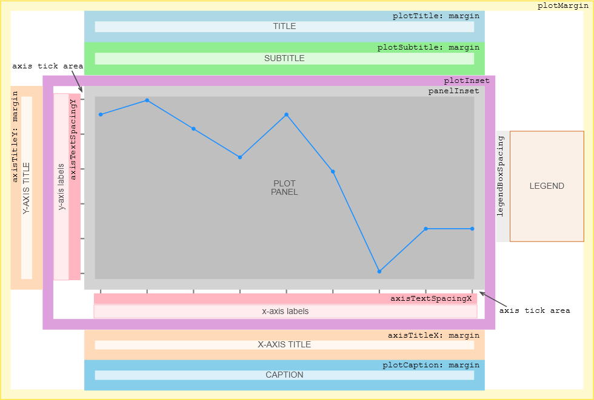
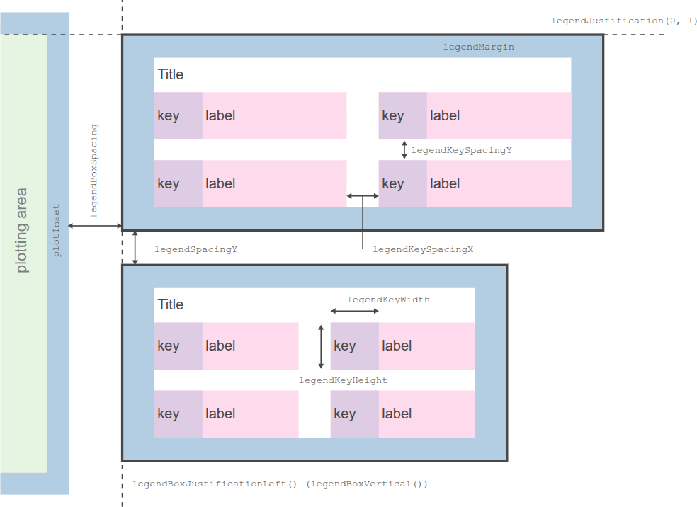

Presentation Options
General Functions
theme(), ggtitle(), ggsize(), xlab(), ylab(), labs(), guideLegend(), guideColorbar(), guides()
Examples
Predefined Themes
minimal2, bw, grey, classic, light, minimal, void, none
Predefined Themes Examples
Color Schemes (Flavors)
darcula, solarized light, solarized dark, high contrast light, high contrast dark
Flavors Examples
Plot Layout Diagrams
These diagrams illustrate layout options and their spatial relationships within plot components.
Option names on the diagrams (e.g., axisTextSpacingX) correspond to theme() function arguments.
Simple options accept numeric values directly, e.g. theme(axisTextSpacingX = 10).
Composite options shown as axisTitleX: margin accept elementText() or elementRect() function results, e.g. theme(axisTitleX = elementText(margin = listOf(5, 5))).
Plot Panel Layout

Legend Box Layout

24 July 2025